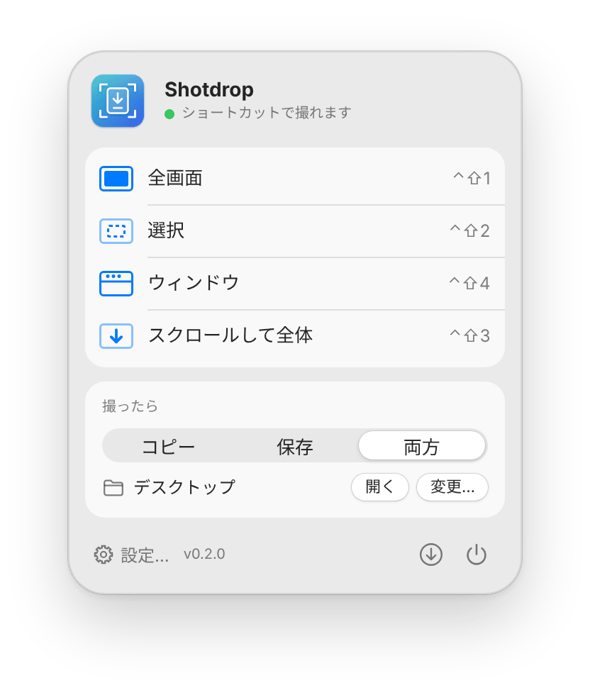
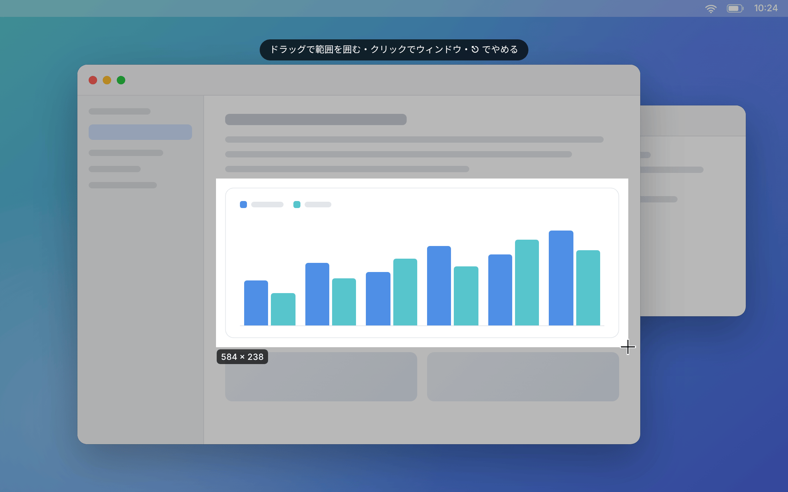

Mac用 スクリーンショット · macOS 14 以降
全画面・選択・スクロールして全体を、それぞれショートカット 1 つで。撮った画像はクリップボードにも、フォルダにも、両方にも。長いページも 1 枚の画像になります。
Apple Developer ID で署名し、Apple の公証を受けています · 買い切り 98 円

マウスのある画面を丸ごと。複数の画面でも、いま見ている画面だけを撮ります。
ドラッグで範囲を囲むか、ウィンドウをクリック。ウィンドウは影付きで、後ろに隠れた部分も撮れます。
囲んだ所を自動でスクロールしながら撮り、縦に 1 枚へつなぎます。上下に貼りついたヘッダーやサイドバーは 1 回だけ。撮り終えたら元の位置に戻ります。
クリップボード・フォルダ・両方。メニューバーのパネルからすぐ切り替えられます。PNG と JPEG を選べます。
3 つとも好きなキーに変えられます。macOS の ⌘⇧3・⌘⇧4 とは別に使えます。
撮った画像はお使いの Mac の中だけ。どこにも送りません。

Profilink・TouchRotator など tsubomi のアプリが起動していれば、メニューバーのアイコンを 🌸 1 つにまとめられます。
98 円 買い切り・税込
無料期間で確かめられるため、購入後の返金は原則お受けしていません。購入手続きは販売代行が売主として行います。
まもなく販売を開始します。それまでは無料でお使いいただけます。
| OS | macOS 14 以降 |
|---|---|
| Mac | Apple silicon · Intel の両方 |
| 許可 | 画面収録（撮るため）、アクセシビリティ（スクロール撮影で自動でスクロールするときだけ） |
| 言語 | 日本語 · English · 简体中文 |
| 価格 | 98 円（買い切り・税込）· 14 日間の無料試用つき |
| 署名 | Apple Developer ID で署名・Apple の公証済み |
ご質問・不具合は info@tsubomi.jp へ。